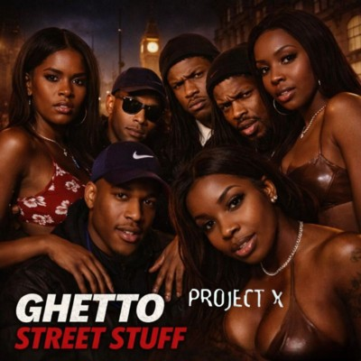

(Whoa whoa)
You better check me. You better check me
(She's got da ghetto street stuff)
You better check me, cat's ready
(Whoa whoa)
If she sexy, fit, and criss, criss, criss
(She's got da ghetto street stuff)
(Whoa whoa)
And she get you lifted like a spliff, spliff, spliff
(She's got da ghetto street stuff)
(Whoa whoa)
And she do it like that when you do it like this
(She's got da ghetto street stuff)
(Whoa whoa)
And if she cook a good food, you know she top of the list
(She's got da ghetto street stuff)
(Whoa whoa)
If she come sexy, fit, and criss, criss, criss
(She's got da ghetto street stuff)
(Whoa whoa)
And she get you lifted like a spliff, spliff, spliff
(She's got da ghetto street stuff)
(Whoa whoa)
And she hit the bullseye and never miss, miss, miss
(She's got da ghetto street stuff)
(Whoa whoa)
And if she get down and know what time it is, it is
(She's got da ghetto street stuff)
Rizzio, getting all emotional
Getting excited-cited 'bout it, 'bout to tell you all
Black ladies, dark and shapely
Young smooth skin man turns me crazy
Chest and back, 10 times stacker
A mack and attacker from the back-ah
There ain't no need for no fake suntans
A real woman for me, a real man
Ghetto street stuff, ghetto street stuff
I like it from underneath or above
(Whoa whoa)
If she come sexy, fit, and criss, criss, criss
(She's got da ghetto street stuff)
(Whoa whoa)
And she get you lifted like a spliff, spliff, spliff
(She's got da ghetto street stuff)
(Whoa whoa)
And she hit the bullseye and never miss, miss, miss
(She's got da ghetto street stuff)
(Whoa whoa)
And if she get down and know what time it is, it is
(She's got da ghetto street stuff)
Brenda Emmanus, I love all them fashion.
And let me come in here 'cause Michelle Gayle
You know you come gale force
Yeah, Angie La Mar, big stuff
Hey, hey, hey, listen
Kim Walker, the Desmond girl, you see her there
Watch this, I'm talking about Beverly Knight
You know you got the 'B' Funk girl
Yo, Lisa I'Anson, number 1, you know it
Yeah, Jenny Francis, you're the number 1 choice
Alongside Angie Greaves, you know we're not grieving
When you come and bring out the record from the record sleeve
Josie D'Arby, no way we've forgotten you, girl
That's right. All of them can come rock my world
Because Project X is the one, number 1
We don't get vexed, we just get sexed
And then we out